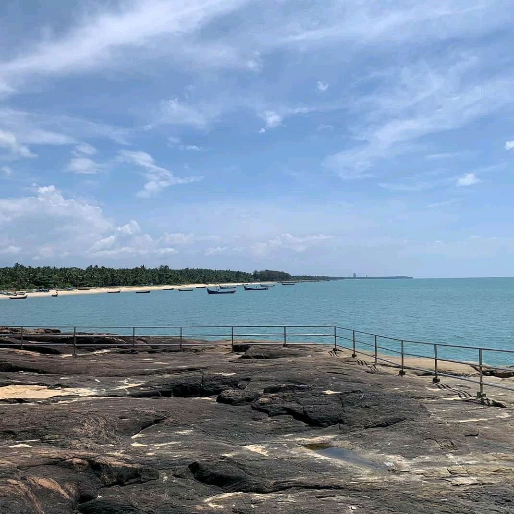
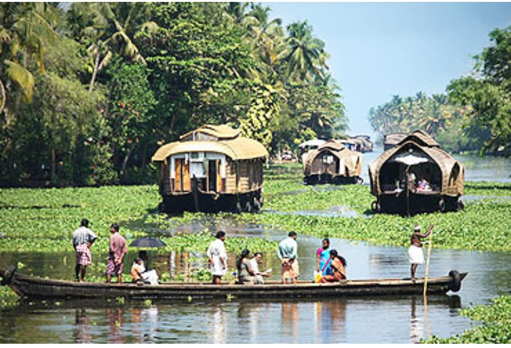
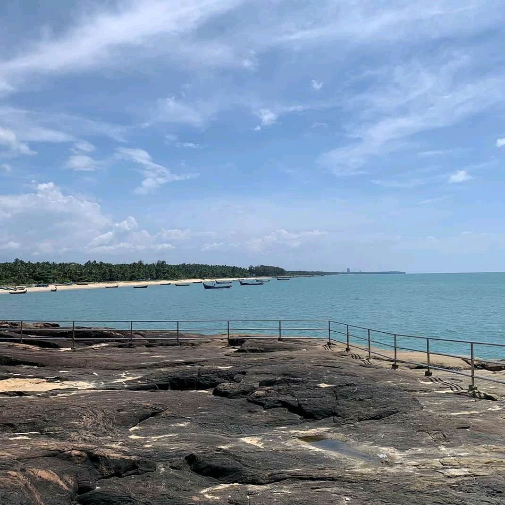
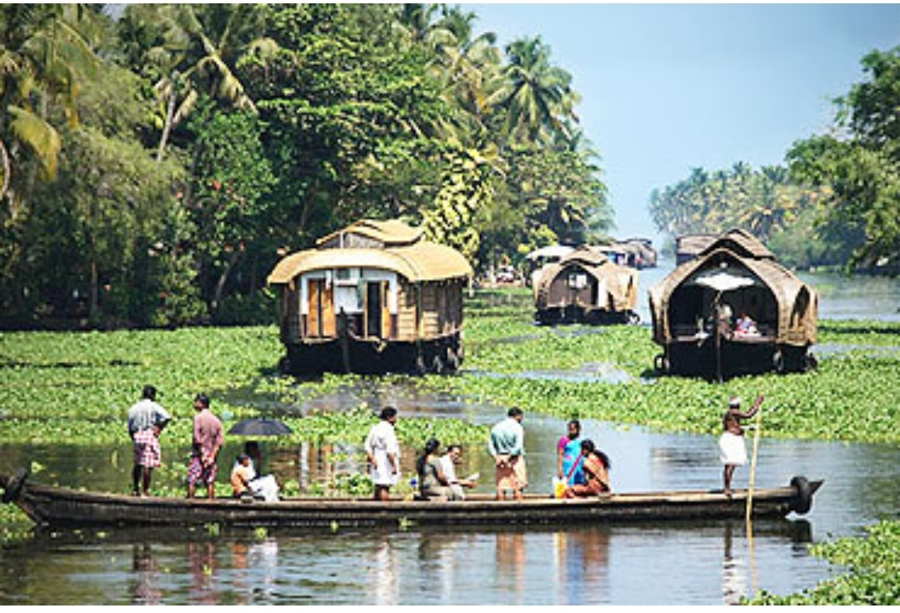

KOZHIKODE BEACH

Kozhikode beach or calicut beach is a beach on the western side of Kozhikode,situated on the Malabar coast of India.The beach is accessable through four road overbridges in the city . The beach is paved stones and illumination
SAROVARAM BIO PARK

Sarovaram biopark, an eco friendly park,is located at Kozhikode has started with the aim of the conservation o mangrove forests and wetland.Saovaram bio park has many species of trees and plants with its nomenclature attached to it
KAPPAD BEACH
Kappad beach is a historic place located near Kozhikode.It was at Kappad in 1498.Kappad beach, a tranquil setting for a relaxed geaway, is located about 16 km from Kozhikode.
KALIPOYKA
Kalipoyka in Kozhikode is the scenic and calm locality of Aryadathupalam where is situated most popular recreational boating centre called Kalipoyka. Cruising and pedal boating are the most pleasurable activities at Kalipoyka.